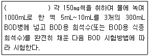
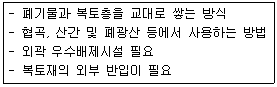
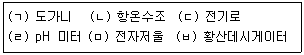

환경기능사 (2015-01-25 기출문제)
1과목: 대기오염방지
1. 다음 대기오염물질과 관련된 업종 중 불화수소가 주된 배출원에 해당하는 것은?
- 고무가공, 인쇄공업
- 인산비료, 알루미늄제조
- 내연기관, 폭약제조
- 코우크스 연소로, 제철
(정답률: 78%)

2. 여과집진장치에 사용되는 다음 여과제 중 최고사용 온도가 가장 높은 것은?
- 유리섬유
- 목면
- 양모
- 아마이드계 나일론
(정답률: 80%)
3. 집진효율이 50%인 중력침강 집진장치와 99%인 여과식 집진장치가 직렬로 연결된 집진시설에서 중력침강 집진장치의 입구 먼지농도가 200㎎/Sm3이라면, 여과식 집진장치의 출구 먼지의 농도(㎎/Sm3)는?
- 1
- 5
- 10
- 50
(정답률: 46%)
4. 대기오염방지시설 중 유해가스상 물질을 처리할 수 있는 흡착장치의 종류와 가장 거리가 먼 것은?
- 고정층 흡착장치
- 촉매층 흡착장치
- 이동층 흡착장치
- 유동층 흡착장치
(정답률: 70%)
5. 다음 중 섭씨 온도가 20℃인 것은?
- 20K
- 36°F
- 68°F
- 273K
(정답률: 73%)
6. 복사역전에 대한 다음 설명 중 옳지 않은 것은?
- 복사역전은 공중에서 일어난다.
- 맑고 바람이 없는 날 아침에 해가 뜨기 직전에 강하게 형성된다.
- 복사역전이 형성될 경우 대기오염물질의 수직이동 확산이 어렵게 된다.
- 해가 지면서부터 열복사에 의한 지표면의 냉각이 시작되므로 복사역전이 형성된다.
(정답률: 73%)
7. 대기환경보전법규상 특정대기유해물질이 아닌 것은?
- 석면
- 시안화수소
- 망간화합물
- 사염화탄소
(정답률: 67%)
8. 대류권에서는 온실가스이며 성층권에서는 오존층 파괴물질로 알려져 있는 것은?
- CO
- N2O
- HCl
- SO2
(정답률: 58%)
9. 다음 중 집진효율이 가장 낮은 집진장치는?
- 전기 집진장치
- 여과 집진장치
- 원심력 집진장치
- 중력 집진장치
(정답률: 73%)
10. 질소산화물의 발생을 억제하는 연소방법이 아닌 것은?
- 저과잉공기비 연소법
- 고온 연소법
- 2단 연소법
- 배기가스 재순환법
(정답률: 70%)
11. 함진가스를 방해판에 충돌시켜 기류의 급격한 방향 전환을 이용하여 입자를 분리∙포집하는 집진장치는?
- 중력 집진장치
- 전기 집진장치
- 여과 집진장치
- 관성력 집진장치
(정답률: 84%)
12. 다음 표준상태(0℃, 760㎜Hg)에 있는 건조공기 중 대기 내의 체류시간이 가장 긴 것은?
- N2
- CO
- NO
- CO2
(정답률: 68%)
13. 다음 기체 중 비중이 가장 큰 것은?
- SO2
- CO2
- HCHO
- CS2
(정답률: 68%)
14. CO 200㎏을 완전연소시킬 때 필요한 이론 산소량(Sm3)은? (단, 표준상태 기준)
- 15
- 56
- 80
- 381
(정답률: 53%)
15. 다음 중 2차 대기오염 물질에 속하는 것은?
- HCl
- Pb
- CO
- H2O2
(정답률: 69%)
2과목: 폐수처리
16. 다음 중 지하수의 일반적인 수질특성에 관한 설명으로 옳지 않은 것은?
- 수온의 변화가 심하다.
- 무기물 성분이 많다.
- 지질 특성에 영향을 받는다.
- 지표면 깊은 곳에서는 무산소 상태로 될 수 있다.
(정답률: 79%)
17. 생물학적 처리방법에 관한 설명으로 옳지 않은 것은?
- 주로 유기성 폐수의 처리에 적용한다.
- 미생물을 이용한 처리방법으로 호기성 처리방법은 부패조 등이 있다.
- 살수여상은 부착 성장식 생물학적 처리공법이다.
- 산화지는 자연에 의하여 처리하기 때문에 활성슬러지법에 비해 적정처리가 어렵다.
(정답률: 54%)
18. 다음 중 콘크리트 하수관거의 부식을 유발하는 오염물질로 가장 적합한 것은?
- NH4+
- SO42-
- Cl-
- PO43-
(정답률: 64%)
19. 명반을 폐수의 응집조에 주입 후, 완속교반을 행하는 주된 목적은?
- floc의 입자를 크게 하기 위하여
- floc과 공기를 잘 접촉시키기 위하여
- 명반을 원수에 용해시키기 위하여
- 생성된 floc의 수를 증가시키기 위하여
(정답률: 60%)
20. 하천의 자정작용을 4단계(Wipple)로 구분할 때 순서대로 옳게 나열한 것은?
- 분해지대 - 활발분해지대 - 회복지대 - 정수지대
- 정수지대 - 활발분해지대 - 분해지대 - 회복지대
- 활발분해지대 - 회복지대 - 분해지대 - 정수지대
- 회복지대 - 분해지대 - 활발분해지대 - 정시지대
(정답률: 78%)
21. 유입하수량이 2000m3/일 이고, 침전지의 용적이 250m3이다. 이 때 체류시간은?
- 3시간
- 4시간
- 6시간
- 8시간
(정답률: 39%)
22. 활성슬러지 공법에 의한 운영상의 문제점으로 옳지 않은 것은?
- 거품 발생
- 연못화 현상
- Floc 해체 현상
- 슬러지부상 현상
(정답률: 72%)
23. 다음 중 산화와 거리가 먼 것은?
- 원자가가 감소하는 현상
- 전자를 잃는 현상
- 수소를 잃는 현상
- 산소와 화합하는 현상
(정답률: 59%)
24. 물 속에서 침강하고 있는 입자에 스토크스(Stokes)의 법칙이 적용된다면 입자의 침강속도에 가장 큰 영향을 주는 변화 인자는?
- 입자의 밀도
- 물의 밀도
- 물의 점도
- 입자의 직경
(정답률: 72%)
25. 지하수의 수질을 분석하였더니 Ca2+=24㎎/L, Mg2+=14㎎/L의 경과를 얻었다. 이 지하수의 경도는? (단, 원자량은 Ca=40, Mg=24이다.)
- 98.7㎎/L
- 104.3㎎/L
- 118.3㎎/L
- 123.4㎎/L
(정답률: 48%)
26. 해수의 특성으로 옳지 않은 것은?
- 해수의 밀도는 수심이 깊을수록 증가한다.
- 해수의 pH는 5.6 정도로 약산성이다.
- 해수의 Mg/Ca비는 3~4 정도이다.
- 해수는 강전해질로서 1L당 35g 정도의 염분을 함유한다.
(정답률: 69%)
27. 용존산소가 충분한 조건의 수중에서 미생물에 의한 단백질 분해순서를 올바르게 나타낸 것은?
- NO-3 → NO-2 → NH+4 → Amino acid
- NH+4 → NO-2 → NO-3 → Amino acid
- Amino acid → NO-3 → NO-2 → NH+4
- Amino acid → NH+4 → NO-2 → NO-3
(정답률: 59%)
28. A공장의 최종 방류수 4000m3/day에 염소를 60㎏/day로 주입하여 방류하고 있다. 염소주입 후 잔류 염소량이 3㎎/L이었다면 이 때 염소 요구량은 몇 ㎎/L인가?
- 12㎎/L
- 17㎎/L
- 20㎎/L
- 23㎎/L
(정답률: 28%)
29. 생물학적으로 질소와 인을 제거하는 A2/O 공정중 혐기조의 주된 역할은?
- 질산화
- 탈질화
- 인의 방출
- 인의 과잉섭취
(정답률: 65%)
30. 다음 중 유기수은계 함유폐수의 처리방법으로 가장 적합한 것은?
- 오존처리법, 염소분해법
- 흡착법, 산화분해법
- 황산분해법, 시안처리법
- 염소분해법, 소석회처리법
(정답률: 53%)
31. 폐수 중 총인을 자외선 가시선 분광법으로 측정할 때의 분석파장으로 옳은 것은?
- 220nm
- 150nm
- 540nm
- 880nm
(정답률: 48%)
32. 다음은 BOD용 희석수(또는 BOD용 식종 희석수)를 검토하기 위한 시험방법이다. ( ) 안에 알맞은 것은?

- 설퍼민산 및 수산화나트륨
- 글루코오스 및 글루타민산
- 알칼리성 요오드화 칼륨 및 아자이드화 나트륨
- 황산구리 및 설퍼민산
(정답률: 62%)
33. 시중 판매되는 농황산의 비중은 약 1.84, 농도는 96%(중량기준)일 때, 이 농황산의 몰농도(mole/L)는?
- 12
- 18
- 24
- 36
(정답률: 52%)
34. 물리적 처리에 관한 설명으로 거리가 먼 것은?
- 폐수가 흐르는 수로에 관망을 설치하여 부유물 중 망의 유효간격보다 큰 것을 망 위에 걸리게 하여 제거하는 것이 스크린의 처리원리이다.
- 스크린의 접근유속은 0.15m/sec 이상이어야 하며, 통과유속이 5m/sec를 초과해서는 안 된다.
- 침사지는 모래, 자갈, 뼈조각, 기타 무기성 부유물로 구성된 혼합물을 제거하기 위해 이용된다.
- 침사지는 일반적으로 스크린 다음에 설치되며, 침전한 그릿이 쉽게 제거되도록 밑바닥이 한 쪽으로 급한 경사를 이루도록 한다.
(정답률: 60%)
35. 수질오염공정시험기준에서 “취급 또는 저장하는 동안에 이물질이 들어가거나 또는 내용물이 손실물이 손실되지 아니하도록 보호하는 용기”를 무엇이라 하는가?
- 차광용기
- 밀봉용기
- 기밀용기
- 밀폐용기
(정답률: 73%)
3과목: 폐기물처리
36. 수분함량이 30%인 어느 도시의 쓰레기를 건조시켜 수분함량이 10%인 쓰레기로 만들어 처리하려고 한다. 쓰레기 1톤당 약 몇 ㎏의 수분을 증발시켜야 하는가? (단, 쓰레기 비중은 1.0으로 가정함)
- 204㎏
- 215㎏
- 222㎏
- 242㎏
(정답률: 55%)
37. 다음 중 폐기물 처리를 위해 가장 우선적으로 추진해야 하는 방향은?
- 퇴비화
- 감량
- 위생매립
- 소각열회수
(정답률: 75%)
38. 장치 아래쪽에서는 가스를 주입하여 모래를 가열시키고 위쪽에서는 폐기물을 주입하여 연소시키는 형태로 기계적 구동부가 적어 고장율이 낮으며, 슬러지나 폐유 등의 소각에 탁월한 성능을 가지는 소각로는?
- 고정상 소각로
- 화격자 소각로
- 유동상 소각로
- 열분해 소각로
(정답률: 66%)
39. 주로 산업 폐기물의 발생량 산정법으로 먼저 조사 하고자 하는 계의 경계를 정확히 설정한 다음 그 시스템으로 유입되는 모든 물질과 유출되는 모든 물질들 간의 물질수지를 세움으로써 발생량을 추정하는 방법은?
- 공장공정법
- 직접계근법
- 물질수지법
- 적재차량계수법
(정답률: 75%)
40. 폐기물 고체연료(RDF)의 구비조건으로 틀린 것은?
- 함수율이 높을 것
- 열량이 높을 것
- 대기 오염이 적을 것
- 성분 배합률이 균일할 것
(정답률: 72%)
41. 다음 폐기물 선별방법 중 특징적으로 자장이나 전기장을 이용하는 것은?
- 중력선별
- 관성선별
- 스크린선별
- 와전류선별
(정답률: 77%)
42. 관거수송법에 관한 설명으로 가장 거리가 먼 것은?
- 쓰레기 발생밀도가 높은 곳은 적용이 곤란한다.
- 가설 후 경로변경이 곤란하고, 설치비가 높다.
- 잘못 투입된 물건의 회수가 곤란한다.
- 조대쓰레기는 파쇄, 압축 등의 전처리가 필요하다.
(정답률: 62%)
43. 폐기물의 수거시 수거 작업 간의 노동력을 비교하기 위하여 사용하는 용어로서, 수거 인부 1인이 쓰레기 1톤을 수거하는데 소요되는 총 시간을 말하는 것은?
- MHT
- HHV
- LHV
- RDF
(정답률: 83%)
44. 다음은 어떤 매립공법의 특성에 관한 설명인가?

- 샌드위치공법
- 도량형공법
- 박층뿌림공법
- 순차투입공법
(정답률: 79%)
45. 다음 중 폐기물공정시험기준상 폐기물의 강열감량 및 유기물 함량을 측정하고자 할 때 사용되는 기구로만 옳게 묶여진 것은?

- (ㄱ), (ㄴ), (ㄷ), (ㄹ)
- (ㄴ), (ㄹ), (ㅁ), (ㅂ)
- (ㄴ), (ㄷ), (ㅁ), (ㅂ)
- (ㄱ), (ㄷ), (ㅁ), (ㅂ)
(정답률: 62%)
46. 일정기간 동안 특정지역의 쓰레기 수거 차량의 댓수를 조사하여 이 값에 밀도를 곱하여 중량으로 환산하는 쓰레기 발생량 산정 방법은?
- 직접계근법
- 물질수지법
- 통과중량조사법
- 적재차량 계수분석법
(정답률: 80%)
47. 인구 50만명인 A도시의 폐기물 발생량 중 가연성은 20%, 불연성은 80%이다. 1인당 폐기물 발생량이 1.0㎏/인∙일이고, 운반차량의 적재용량이 5m3일 때, 가연성 폐기물의 운반에 필요한 차량운행회수(회/ 월)는? (단, 가연성 폐기물의 겉보기 비중은 3000㎏/m3, 월 30일, 차량은 1대 기준)
- 185
- 191
- 200
- 222
(정답률: 44%)
48. 폐기물의 고형화 처리방법으로 가장 거리가 먼 것은?
- 활성슬러지법
- 석회기초법
- 유리화법
- 피막형성법
(정답률: 65%)
49. 폐기물 소각 공정에 사용되는 연소기의 종류에 해당하지 않는 것은?
- Scrubber
- Stoker
- Rotary kiln
- Multiple hearth
(정답률: 58%)
50. 호기성 미생물을 이용하여 유기물을 분해하는 퇴비 화공정의 최적조건의 범위로 가장 거리가 먼 것은?
- 수분함량 : 85% 이상
- pH : 6.5 ~ 7.5
- 온도 : 55 ~ 65℃
- C/N비 : 25 ~ 30
(정답률: 58%)
51. 매립 시 발생되는 매립가스 중 악취를 유발시키는 것은?
- CH4
- CO
- CO2
- NH3
(정답률: 69%)
52. 폐기물을 분석하기 위한 시료의 축소화 방법으로만 옳게 나열된 것은?
- 구획법, 교호삽법, 원추4분법
- 구획법, 교호삽법, 직접계근법
- 교호삽법, 물질수지법, 원추4분법
- 구획법, 교호삽법, 적재차량계수법
(정답률: 75%)
53. 착화온도에 관한 다음 설명 중 옳은 것은?
- 분자구조가 간단할수록 착화온도는 낮아진다.
- 발열량이 작을수록 착화온도는 낮아진다.
- 활성화에너지가 작을수록 착화온도는 높아진다.
- 화학결합의 활성도가 클수록 착화온도는 낮아진다.
(정답률: 44%)
54. 밀도가 0.4t/m3인 쓰레기를 매립하기 위해 밀도 0.85t/m3로 압축하였다. 압축비는?
- 0.6
- 1.8
- 2.1
- 3.3
(정답률: 56%)
55. 다음 연료 중 고위발열량(kcal/Sm3)이 가장 큰 것은?
- 프로판
- 일산화탄소
- 부틸렌
- 아세틸렌
(정답률: 55%)
4과목: 소음 진동학
56. 진동수가 200Hz이고 속도가 100m/s인 파동의 파장은?
- 0.2m
- 0.3m
- 0.5m
- 2.0m
(정답률: 50%)
57. 종파(소밀파)에 관한 설명으로 옳지 않은 것은?
- 매질이 있어야만 전파된다.
- 파동의 진행방향과 매질의 진동방향이 서로 평행하다.
- 수면파는 종파에 해당한다.
- 음파는 종파에 해당한다.
(정답률: 57%)
58. 점음원의 거리감쇠에서 음원으로부터의 거리가 2배로 됨에 따른 음압레벨의 감쇠치는? (단, 자유시간)
- 2dB
- 3dB
- 6dB
- 10dB
(정답률: 59%)
59. 방음벽 설치 시 유의사항으로 거리가 먼 것은?
- 음원의 지향성과 크기에 대한 상세한 조사가 필요하다.
- 음원의 지향성이 수음측 방향으로 클 때에는 벽에의한 감쇠치가 계산치보다 크게 된다.
- 벽의 투과손실은 회절감쇠치보다 적어도 5dB 이상 크게 하는 것이 바람직하다.
- 소음원 주위에 나무를 심는 것이 방음벽 설치보다 확실한 방음 효과를 기대할 수 있다.
(정답률: 62%)
60. 2개의 진동물체의 고유진동수가 같을 때 한 쪽의 물체를 울리면 다른 쪽도 울리는 현상을 의미하는 것은?
- 임피던스
- 굴절
- 간섭
- 공명
(정답률: 79%)